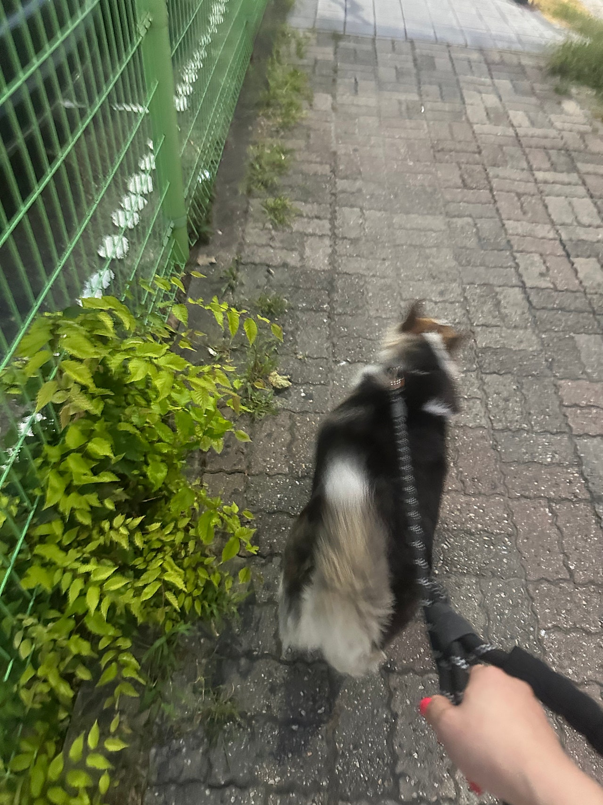
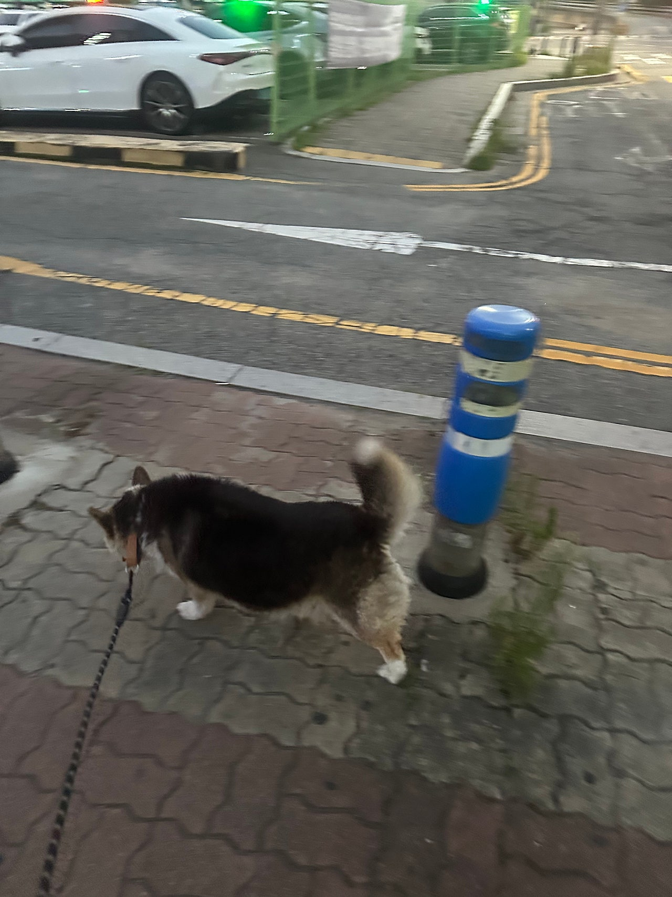
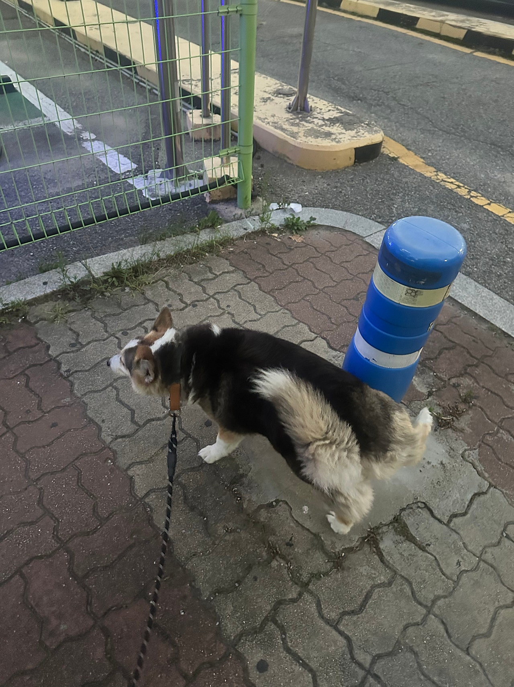
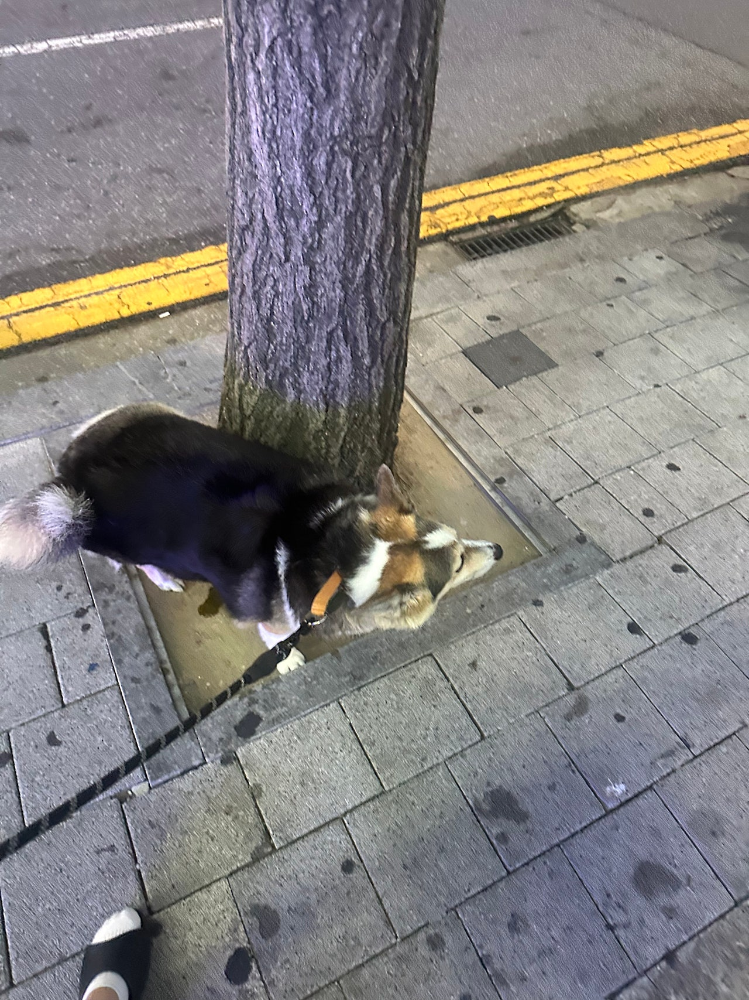
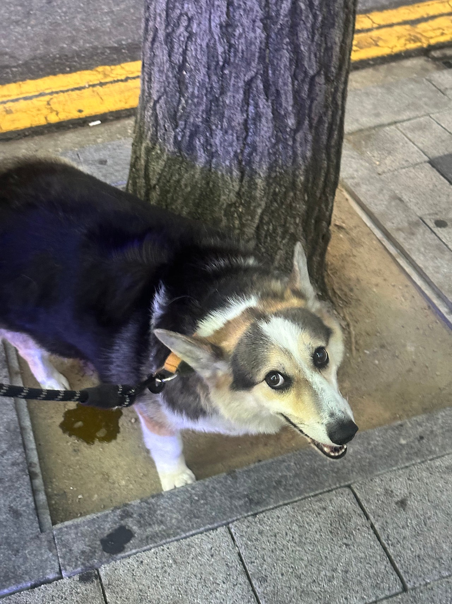

웰시코기 카디건 미르의 산책 (마킹대마왕,,)


울미르는 웰시코기 카디건 이라는 종이에요~보통 우리 주변에 쉽게 만날수 있는 웰시는웰시코기 펨브룩 이라는 종류에요카디건은 대부분 꼬리를 단미하지 않아서풍성한 꼬리를 자랑한답니다우리 미르도 풍성한 꼬리를 가지고 있어요 !산책할때마다 저 풍성한꼬리를 흔들면너무너무 귀여워요 ㅠㅠ 여우꼬리같앵,,,


미르는 안에서는 마킹을 안하는데산책만 하면 아주 마킹대마왕이 된답니다...ㅎㅎ나중엔 나오지도 않는데 쥐어짜는 느낌..??모든 남자 강아지가 마찬가지겠지만미르는 유독 더 상남자 같다는,,ㅋㅋㅋㅋㅋ덩치도 카디건이 펨브룩보다는 더 커서더 상남자 같아요 ㅎㅎㅎ


빌라 옥상에서만 지냈던 미르가아가펫스토리를 통해 시원한 에어컨 바람 맞으며낮잠도 자고 신나는 산책도 즐기고!!이제 우리 미르는 더 좋은 가족을 만날 일만 남았답니다꽃길만 걷자 미르야~0505-464-1004
댓글 18
옥상만 알던 아이가 밖으로 나온 산책이라 더 귀하게 읽혀요.
좋은 가족이 이 꼬리랑 산책 욕심을 받아 주면 좋겠어요.
사랑받을 일만 남았으면 해요.
집에서는 점잖고 밖에만 나면 달라지는 미르, 글이 정확해요.
카디건은 꼬리를 안 자른다는 글처럼, 풍성한 꼬리가 사진에 보여요.
건강한 모습 그대로 가족 만나길.
집 안에서는 마킹을 안 하고 산책에서만 대마왕이라는 거, 웃기면서 공감돼요.
카디건이 펨브룩보다 덩치가 크다는 소개가 사진이랑 맞아요.
사진 보는 동안에도 좋은 가족이 생기길 빌었어요.
웰시 중에서도 카디건이라는 점이 사진의 체구랑 연결돼요.
웰시코기 카디건 미르, 펨브룩이랑 다르다는 설명이 도움이 됐어요.
댓글로나마 쓰다듬고 갑니다. 잘 자라.
낮잠 자는 에어컨 바람 이야기도 이제 미르 일상에 들어 있어요.
풍성한 꼬리가 이 글의 포인트네요. 사진에서 먼저 보였어요.
아프지 말고 잘 자라라.
옥상 생활 끝나고 신나는 산책이라는 대비가 글의 핵심이에요.
빌라 옥상에서만 지내던 미르가 에어컨이랑 산책을 만났다는 이야기가 좋아요.
꼭 좋은 데로 가세요.